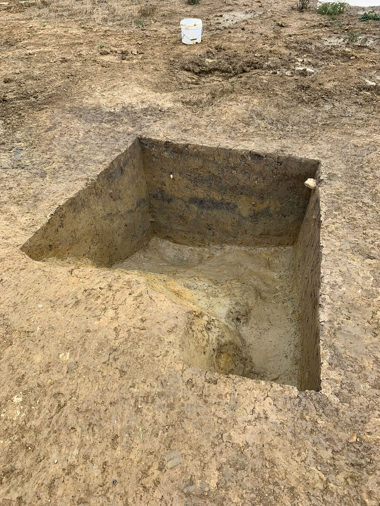

Who We Are
Keystone Archaeology is a dedicated team of professional archaeologists passionate about uncovering and preserving the UK's rich historical heritage. With years of experience in excavation, analysis, and heritage consultancy, we work closely with developers, local authorities, and communities to ensure that archaeological remains are properly documented and protected before development takes place.

What We Do
We provide comprehensive archaeological services including desk-based assessments, trial trenching, excavation, watching briefs, and post-excavation analysis. Our team conducts thorough investigations to identify, record, and preserve archaeological sites, ensuring compliance with planning regulations and heritage legislation while contributing to our understanding of the past.